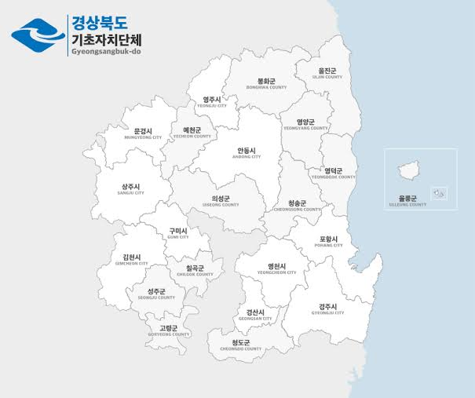
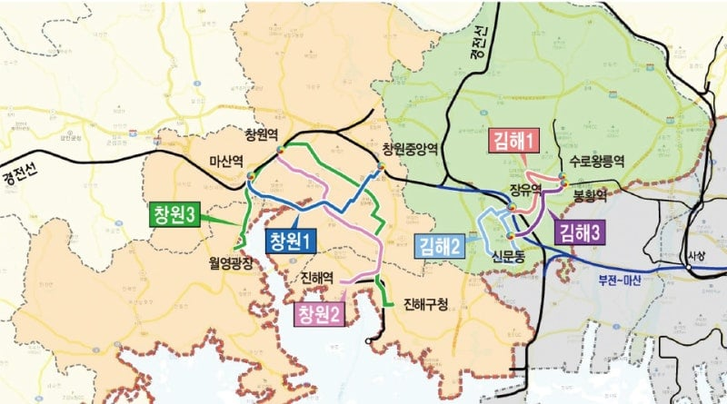

강원특별자치도
없음 (최대도시 원주 36만)
충청남도
천안(66만)
충청북도
청주(86만)

경상북도
없음 (최대도시 포항 48만)

경상남도
창원(98만), 김해(53만)
전북특별자치도
전주(62만)
전남광주통합특별시
없음 (최대도시 북구 42만)
경기도에는
50만 이상 도시만도 12개에
그 중 100만 이상은 4개씩이나 된다.
경남은 창원 통합 안했으면
인구 50만 이상 도시는 김해 1개였다
강원특별자치도
없음 (최대도시 원주 36만)
충청남도
천안(66만)
충청북도
청주(86만)

경상북도
없음 (최대도시 포항 48만)

경상남도
창원(98만), 김해(53만)
전북특별자치도
전주(62만)
전남광주통합특별시
없음 (최대도시 북구 42만)
경기도에는
50만 이상 도시만도 12개에
그 중 100만 이상은 4개씩이나 된다.
경남은 창원 통합 안했으면
인구 50만 이상 도시는 김해 1개였다
노원구 인구 넘버3였는데 밀렸구나
구축많고 베드타운에 어르신들이 많아짐
여기도 이제 싹 재개발 들어가야하는데 어케될지모르겠네
재개발로 젊은 노원 만들기는 불가능.. 슬럼화 되어가는 기괴한 서울을 보게 될것임.
오히려 재개발되면 젊은 부부들이 꽤나 들어와서 인구수는 늘거임
근데 이 구축들을 신축으로 만드려면 돈이 필요한데 지금 노원구는 노인인구가 많아서 힘듦
재건축이 됐다고 치면 노원 살아나겠지, 그런데 당장에 작은 평수에 노인들만 있는데. 그 많은 분담금을 낼 노인들이 많을까? 아니면 이쯤에서 그냥 이 동네에서 살다가 죽을테니 제발 신경꺼달라고 할 노인들이 많을까?
죄다 재건축한다고 하면 찬성이 과반수 쉽게 나오고 분담금 이야기 나오면 드러눕고 결사반대해. 특히 노원말야.
지금 노원은 정상적으로 재건축 할 방법이 안 보여.
10년 보유 5년 실거주한 사람들은 대부분 찬성하고있음
상계 주공6단지 쪽이나 분담금으로 빠그라졌고
아마 근 10년내에 노원구쪽 7호선라인은 죄다 공사 들어갈거임
너무 집값이올라서 재개발 동력이 있을랑가 모르겠다 거기 사는 양반들이 분담금 수억씩 낼 사람이 얼마나 있을랑가 모르겠네
전용 59가 84받으려면 3~4억 생각하는데
아마 말미에는 5억쯤... 더 있어야겠지
역세권대단지 생각하면 추진만된다면 조합원 양도하고 나가면 됨
서울로 상경하고싶다
전주 꽤 인구가 많은 도시구나
전북에서 대놓고 광역시 만드려고 했었으니까 문제는 실패하고 땅도 좁아서 완주랑 통합 하려고 하는데 완주에서 거부중
사람너무 많은거 싫지만
일자리가 다 서울에 있는걸
이거 해결되는거 가능은 한가
그니까. 서울 사람 너무 많아.. 나도 기회만 되면 걍 지방가서 살고싶음
슬슬 지쳐요 ㅠㅠ.. 콩나물시루 출퇴근길..
여담인데 천안 아산 사이에 개발 많이 되어서 둘이 한도시로 연담화 되고 있음
삼성이 이번에 아산에 몇조 투자한담서.
지나가면서 보면
아산이 아파트 많이 짓기는하드라
평택 천안 아산 이렇게 보면 제법 거대한 규모이긴한데 생활권이 다 달라서 딱히 무슨 효과가 있는 것 같진 않음.
천안쪽에서 아산이랑 합쳐보려는 움직임 있던것 같은데 아산 쪽에서 할 이유가 없기도 하고(세수가 아산이 더 많음)
김해도 창원집값비싸 이사온사람들이 다채움 ㅋㅋ
포항 50만깨졌네 어느새
청주 음식은 뭐임?
간장 발라서 구워먹는 삼겹살ㅋㅋ
서울공화국 완성되었구나
30만 기준해도 별로없을듯
30만 기준으로 바꾸면 이 정도
강원도 : 원주
충남 : 천안, 아산
세종
충북 : 청주
광주전남 : 북구, 광산구
전북 : 전주
경북 : 포항, 구미
경남 : 창원, 김해, 양산, 진주
김해 제조업 원툴인데 인구 많네
청주는 의외로 많네 몇 번 갔을 때는 천안보다 작은 도시처럼 보였는데
테러협박으로 오송분기점 만들었으면 인구는 많아야지
청주랑 청원군이랑 통합
청주 저 음식 맛있던데
시오후키?
저기 인구 많은 도시가 지방자치 잘해서 큰 도시들이 아니라 지방자치제 이전에 국가주도 거점개발때 큰도시 아니면 광역도시권 확장 인근 도시들. 그나마도 다 인구 감소중이고. 지방자치제가 의미없는 이유 중에 하나임.
청주 천안은 증가세임
물론 수도권 여파지만
그만큼 수도권에 몰빵하니 거기만 증가하지
당장 지방에 쓰레기 트램까는데
수도권은 도시철도를 깔아도 고가철도 기본에
쓰레기 트램을 둬도 도로랑 따로 가게 만듦
물론 소음과 진동, 먼지 등으로 불만 많지
ㅇㅇ 지금 우리나라에서 인구 증가한다는 도시들은 그냥 수도권 확장 인근 도시들 뿐. 그래서 충청권만 크고 나머지 다 죽고 있고. 게다가 우리나라 조세구조가 국가에서 지방신청에 따라 돈 내려주는 형식이라 지금처럼해서 지방자생 불가능함. 지방분권으로도 당연히 안되고 국가에서 나서서 인프라 때려박아야됨.
청주 삼겹 맛남
경기도를 개발안랬으면 서울 집중도 없었겠네
서울 구별 인구 순위
송파구: 약 65만 7천
강남구: 약 56만
강서구: 약 56만
강동구: 약 50만
이렇게 보니 지방 상황이 심각하긴 해